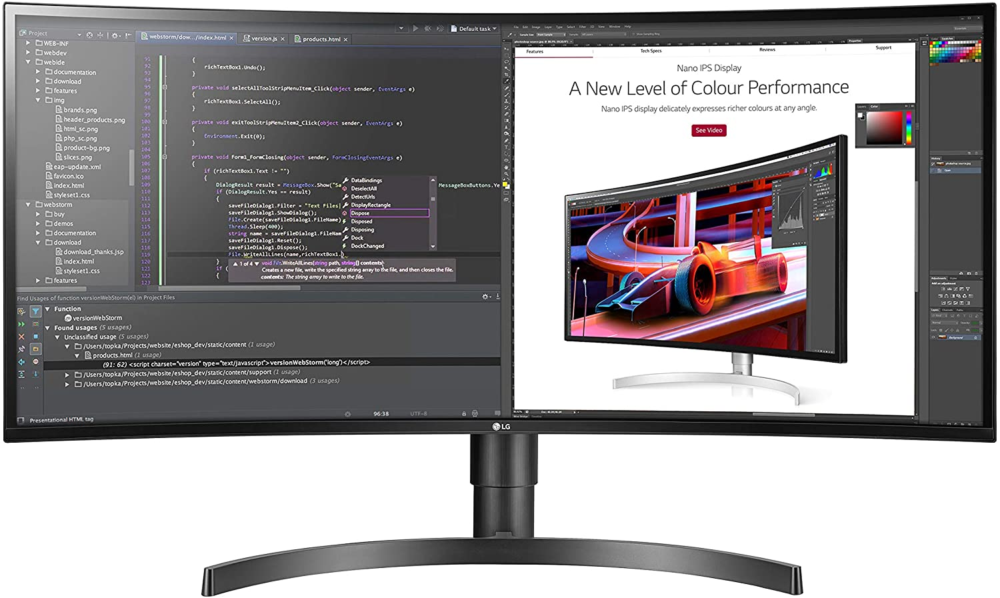
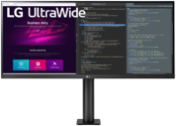
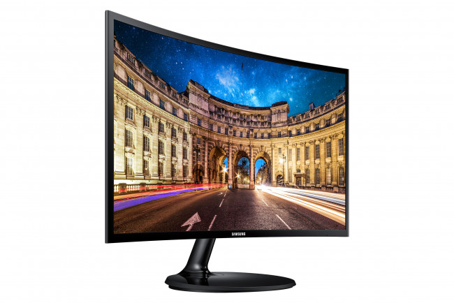
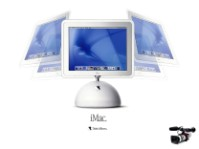

4К-МОНИТОР — ЗАЧЕМ ОН НУЖЕН И КАК ЕГО ВИБРАТЬ

Сначала определим, что же такое 4К. Это мониторы с высоким разрешением, ширина которых — близка к 4 000 пикселей. Визуальная разница видна невооруженным взглядом: картинка на 4К-мониторе больше примерно в четыре раза, чем на Full HD-мониторе. На экране помещается больше информации, картинка выглядит плотнее, на мониторе помещается больше окон.
Кому актуально такое разрешение? Во-первых, специалистам по работе с графикой и тем, кто привык работать с несколькими окнами одновременно — на 4К можно открыть одновременно 2-3 окна и комфортно работать с ними, не уменьшая масштаб страницы или шрифт.
Также 4К полезен тем, кто часто смотрит фильмы и сериалы. С играми в таком разрешении всё сложнее — далеко не каждая видеокарта потянет новую игру в 4К и с приемлемым количеством кадров в секунду. Чтобы перейти на гейминг в 4К потребуется обновить не только монитор, но и частично системный блок.
Как и для всех остальных мониторов, 4К мониторы отличаются по яркости и контрастности. Для комфортной работы и правильной цветопередачи важнее все таки контрастность — она отвечает за то, насколько глубокими будут цвета и не превратится ли черный в темно-серый. Сверхяркий же монитор нужен только тем, кто работает в ярко освещенном помещении или под прямыми солнечными лучами — в остальных же случаях повышенная яркость будет излишне напрягать глаза.
Поскольку 4К — это довольно новая разработка, в таких монитор нет устаревшего разъема D-Sub: только видеопорт DVI и два видео-аудио порт, DisplayPort и HDMI.
В остальном мониторы отличаются диагональю и типом матрицы — перейдем к этим параметрам.
  
С диагональю 27 дюймов
Такая диагональ — самый распространенный и недорогой вариант. Все модели с такой диагональю имеют тип матрицы IPS: такая матрица дает четкую, насыщенную картинку и обеспечивает наилучшую цветопередачу.
С диагональю 28 дюймов
Менее распространенная диагональ для 4K. Все три описанные здесь 28-дюймовые мониторы имеют время отклика 1 мс, контрастность 1000:1 и тип матрицы TN — такая матрица работает быстрее всех остальных матриц и отличается минимальным временем отклика.
С диагональю 32 дюйма
С такой диагональю представлено две модели, и обе имеют тип матрицы IPS. У обеих моделей подставка поддерживает возможность регулировки высоты и поворот экрана в портретный режим. Также оба монитора имеют USB-концентратор и по одному порту HDMI и DisplayPort.
Контрастность у обоих моделей равна 1000:1. У монитора Benq PV3200PT яркость 250 кд/м², а у Benq PD3200U яркость 350 кд/м², также есть встроенные динамики. Время отклика — 5 и 4 мс соответственно.
С диагональю 42 дюйма
Наибольшая диагональ среди 4К-мониторов. Обе модели имеют тип матрицы IPS, оснащены USB-концентратором и подставкой с наклоном вперед-назад. Время отклика 5 мс..